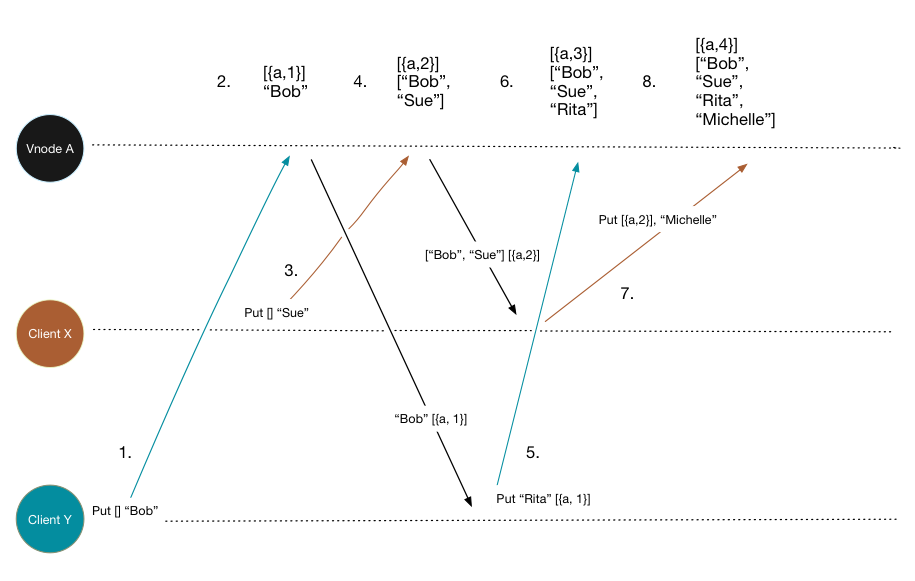
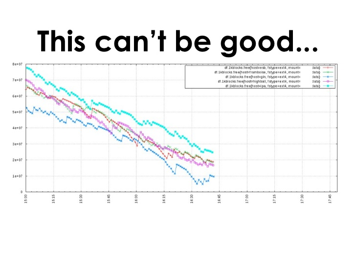
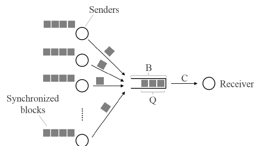
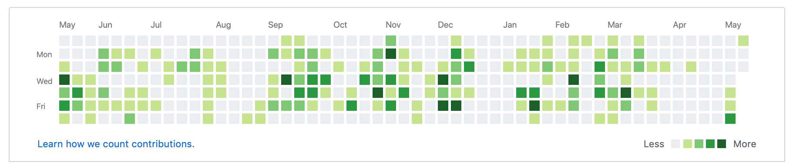

Riak - A Distributed Systems Story on The Beam
@masleeds
Riak - Ten Year Potted History
2009 - Initial riak preview released
2011 - 1.0 and the fight for stability
2014 - 2.0 and the fight for new markets and developer productivity
2017 - Basho into receivership, bet365 open assets
Today - Release 2.9.0 the second open-source release
Riak - Failure of Mass Adotion
Surprisingly Untrendy
Speed to market is king
One machine is powerful, many machines is a service
Enterprise purchases - bad measures and bad predictions
The Riak Niche
Availability and Durability are non-negotiable
Guarantees are constant through failure ...
... Operators need to eventually react
Latency is acceptable when it is predictable
Minimal decision trees, minimal operating procedures
Big but finite
Can a global niche be supported?
Risk management and the power of control
Uncertainty was troubling, no market of opportunites emerged
The day-job pushed estimation way-off the mark
Duplicate ideas are converging
Contributors are rising in numbers
A history of riak going rogue
Sibling Explosion
Aggressive Recovery
TCP Incast
PICNIC - Timeouts and Feature Abuse
The Challenge of Problem Discovery
Discover problems through developer reasoning
Discover problems through testing
Discover problems through a support network
Better time allocation ...
... Reduced capcity to reason
... No centralised access to information
Evolving a long-term solution
Fixing tests, fixing dialyzer
Production testing before release
Independent assurance - Quviq as a testing service
Avoid low-reward improvements
Simple changes post-Basho
Riak 2.2.5
Fixed a testing bug in cluster claim
Fixed a bug in cluster claim hidden by the testing bug
Node confirms (to replace pw=2)
One Slow Node
One Slow Node
Caused by background jobs
Caused by failure with RAID
Caused by non-homogenous hardware
Caused by query co-ordination
Caused by hot keys
A slow node < A failed node
Fails predictable latency promise - PUTs and 2i
Changes post-Basho
Riak 2.9.0 - Released Today!!
Poll queues before selecting PUT co-ordinator
Allow support for n HEAD, 1 GET
50% improvement in throughput
Order of magnitude improvement in mean 2i time
Order of magnitude improvement 99th percentile PUT time
Reconciliation

The reconciliation problem
Many TBs perhaps PBs of data
More than one cluster containing the data
Perhaps not every cluster aligns data the same way
Perhaps some clusters have only a subset of data
How do we reconcile these clusters?
... Without causing one slow node
Changes post-Basho
Tictac AAE - Talk @ CodeBEAM 2018
Implemented for intra-cluster AAE in 2.9.0
Now testing inter-cluster AAE in 2.9.1
Added last-modified-date extension to feature
Scheduled repair, and dynamic repair options
Combined with new repl solution
Still to consider AAE with TTL
Developer Productivity
Developer Productivity
Solr integration
Conflict-free Replicated Data Types
Strong consistency
Map-Reduce (JS, Erlang)
Changes post-Basho
Working on 3.0 - OTP20 migration
Pulled back from orignal retirement plans
Potential for Riak Nucleus
Funding shortfall for further enhancements
Thank-You
http://martinsumner.github.io/presentations/riak_beam2019.html#/
@masleeds